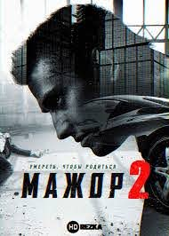
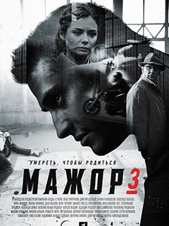

Сюжет
1 Сезон
Главный герой — Игорь Соколовский, сын олигарха Владимира Соколовского, долгие годы растившего сына в одиночку и не уделявшего должного внимания его воспитанию. Имея юридическое образование, Игорь, однако, не спешит найти ему применение и прожигает жизнь в ночных клубах. После одной из вечеринок, спасая друга от ареста за хранение наркотиков, он ввязывается в драку с сотрудниками отделения полиции № 19. Чтобы защитить сына от тюрьмы, Владимир Соколовский отправляет его работать в это самое отделение, под началом подполковника Пряникова. С первых дней Игорь воспринимает новую жизнь как мелкие временные трудности, в надежде, что отец «отойдёт, остынет» — однако, пройдя через цепь испытаний, он постепенно становится мужчиной, находит настоящих друзей, встречает любовь в образе непосредственного начальника, капитана Виктории Родионовой. Соколовский задаётся целью найти убийцу матери. Именно эти поиски выводят его на олигарха Аркадия Игнатьева, не уступающего Владимиру Соколовскому ни в средствах, ни в связях — и приводят к пониманию, что человек этот крайне опасен. Гибель отца от рук нанятого Игнатьевым наёмного убийцы повергает Игоря в отчаяние, он пытается свершить самосуд над Игнатьевым, терпит неудачу — и попадает за решётку.

2 Сезон
В начале второго сезона Игоря Соколовского, неожиданно для всех и в первую очередь для него самого, выпускают из СИЗО, сняв все обвинения в покушении на убийство. Он выходит на свободу с желанием отомстить, так как считает Игнатьева виновным в смерти родителей. Мажора восстанавливают на службе, он возглавляет бизнес-компанию отца, перешедшую к нему по наследству, заводит роман с Катей, дочерью самого Игнатьева. Продолжает конфликт с Данилой Королёвым из-за Родионовой: между Игорем и Викой до сих пор остались чувства. И день за днём торопит развязку — месть Игнатьеву.

3 Сезон
К началу третьего сезона главный герой перестал быть тем «мажором», который когда-то смотрел на всех свысока и считал свою службу в полиции вынужденной «ссылкой». Смерть матери и недавнее убийство отца могут быть раскрыты во многом благодаря этой службе. Когда-то поклявшийся отцу, что станет «честным ментом» — именно им Мажор и становится: он растёт в профессиональном плане, ежедневно работая над раскрытием различных преступлений, при этом не только следует букве закона, но и находит универсальные решения. Чтобы отомстить за смерть отца, он в совершенстве овладел стратегией ведения крупного бизнеса, но чтобы рассчитаться за убийство матери, ему придется решить для себя — сможет ли он остаться в рамках закона, не нарушить собственных принципов чести. Соколовский готов ко всему, но жизнь всегда свежа на сюрпризы: смертельный враг может оказаться верным другом, а доказавший некогда свою верность — заклятым врагом, хранящим ужасные тайны прошлого. Тайны, которые, быть может, и не стоит открывать.
